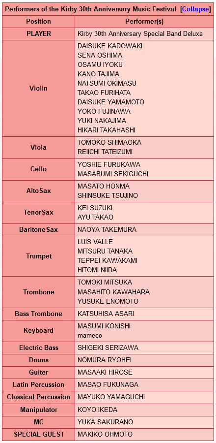

The Kirby 30th Anniversary Music Festival (also written as Kirby 30th Anniversary Music Fest.) was a music festival that happened on August 11th, 2022, to celebrate the 30th anniversary of the Kirby series. It was held at the Tokyo Garden Theater and the evening performance was livestreamed for free worldwide, and an archive of the livestream was up until August 31st, 2022, 18:00 JST.
Unlike the Kirby 25th Anniversary Orchestra Concert, which exclusively had orchestrated music, this event featured a large big band-style ensemble of 35 musicians, called the "Kirby 30th Anniversary Special Band Deluxe", that performed Kirby music in a variety of genres. There was also a large LED monitor that featured a moving Kirby, and Kirby's voice actress Makiko Ohmoto was present as a special guest.
This website was created by Matthew Klapchar. All songs are property of HAL Laboratory (the creator of the Kirby Series) and published by Nintendo. Hosted on GitHub.
Hope you enjoy!